BladeRunner - Usage Guide
Usage
Startup
Application on startup with data loaded.

Select Team/Day
The application allows the users to create inspection areas by teams/days


Sketching Working Areas
Just move your finger around to create an area
- 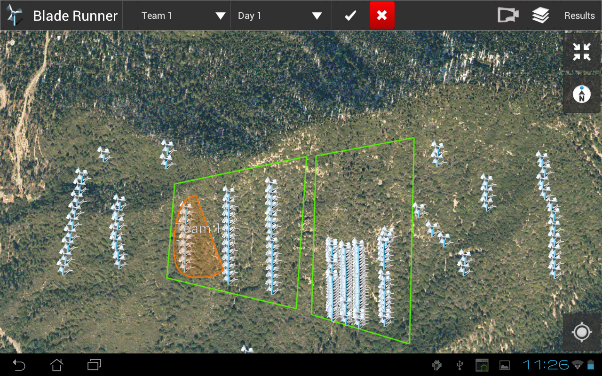
Commit Areas
Tap on the Accept button to create graphics in the feature layer. Here areas for Team3 have been created

Tap on the Delete button to delete sketch
Team Areas' Wind Turbines Selection
After the working areas get created as graphics in the feature layer, a multi-part polygon is created and using the GeometryEngine this polygon is intersected with the Wind Trubines to find features . Tap on this button to see the list of features found

The Map red pin shows the highlighted feature on the list
Pair Device with Range Laser Finder
Tap on the Range Laser Finder (RLF) button to pair the RLF with the tablet If the Bluetooth is OFF, the application will show the following dialog to turn it on
- 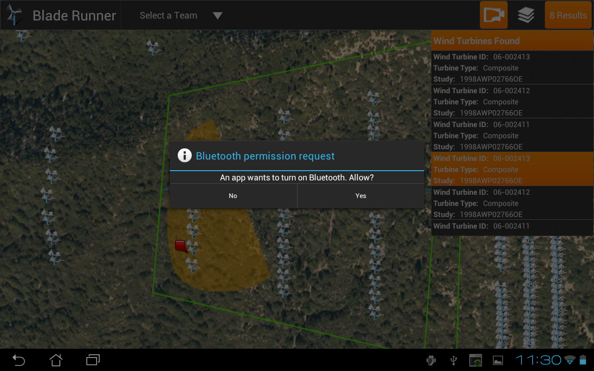
After the bluetooth is on a new dialog will show to scan for bluetooth devices
- 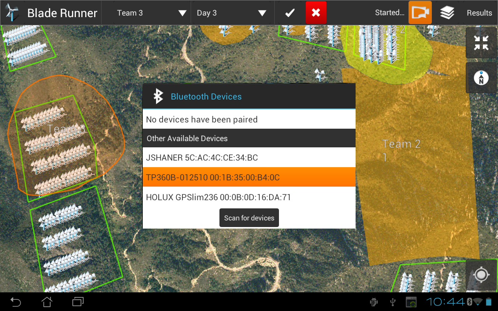
If the LRF has not been pair before, the application will show a dialog to pair it
- 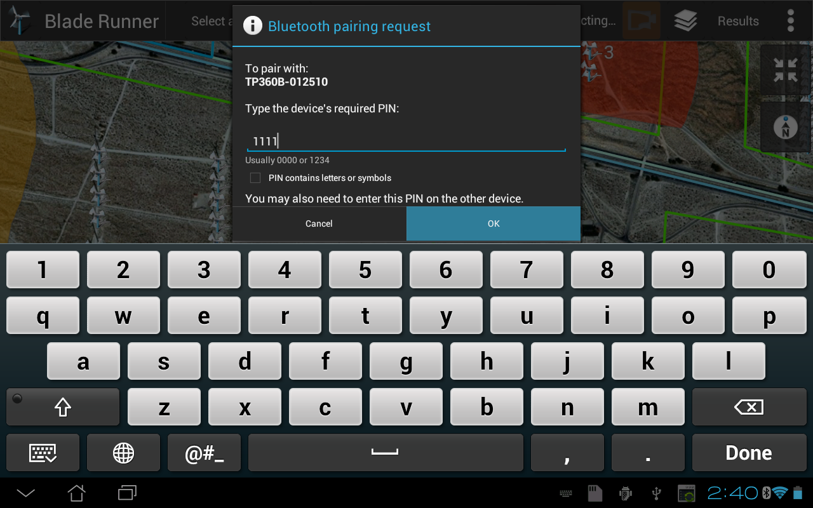
Once the LRF has been pair with the device, a panel will be shown below the LRF button with the sentence information after shooting a point with the LRF
- 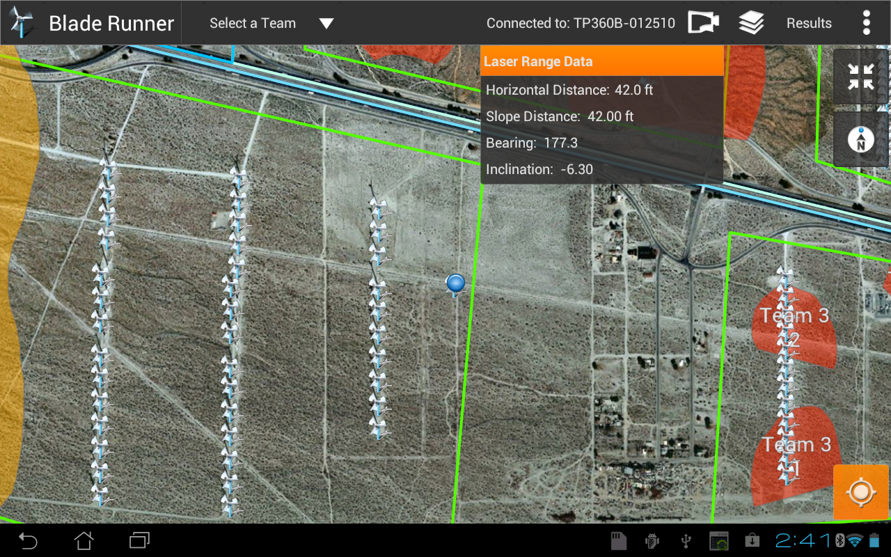
When a lecture is done with the RLF a new Wind Turbine gets added to the feature layer and fuchsia line will be shown to indicate the direction in which the LRF was pointed at
- 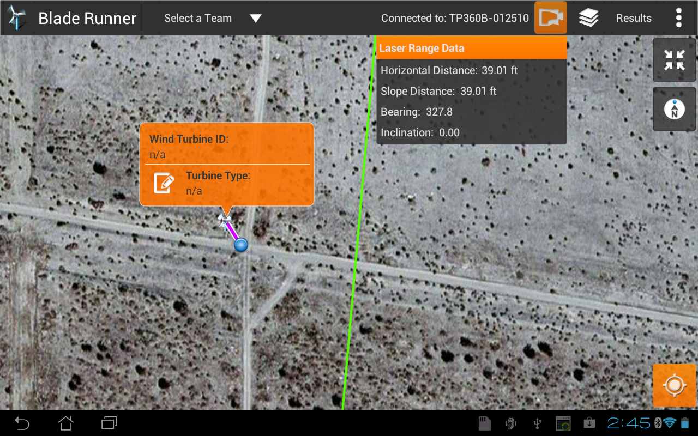
Also, a callout will be shown to allow to edit a TYPE attribute
- 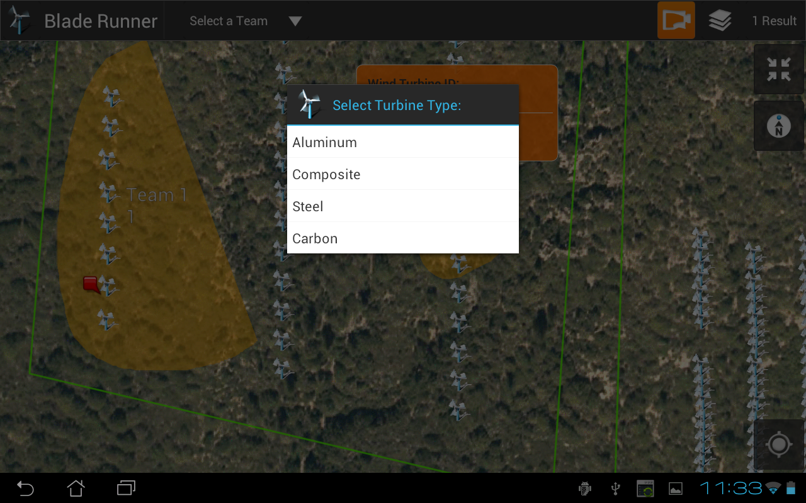
- 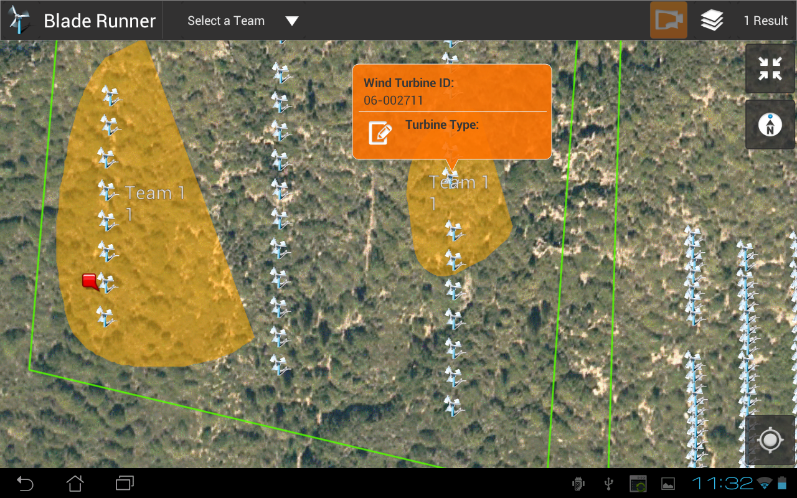
Map Layers
Tap on the Map Layers button to get a list of the current layers in the map
- 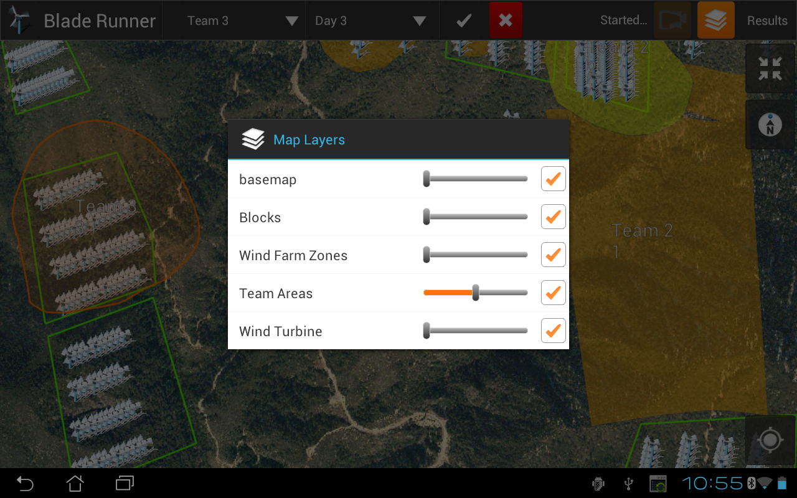
Users can change the layer's opacity

Users can hide/show the layer in the map
- 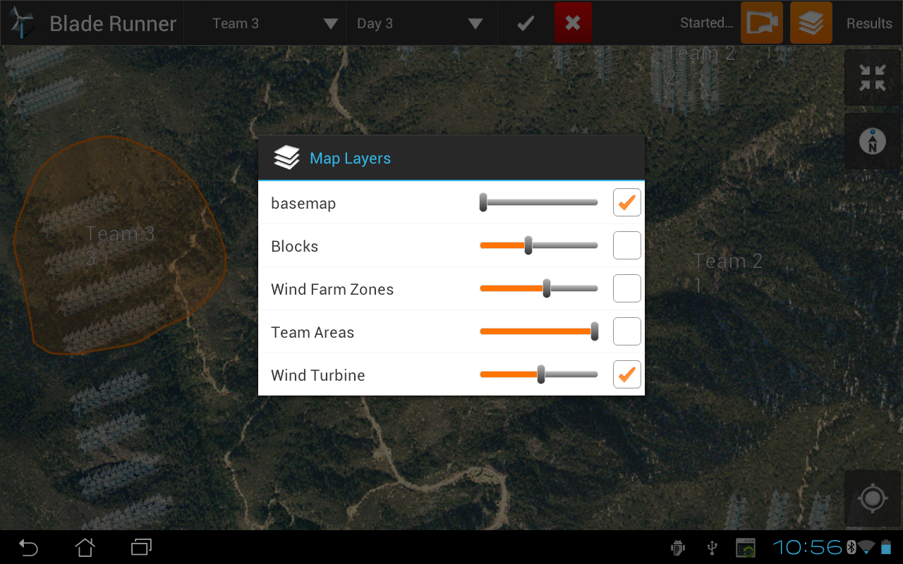
- 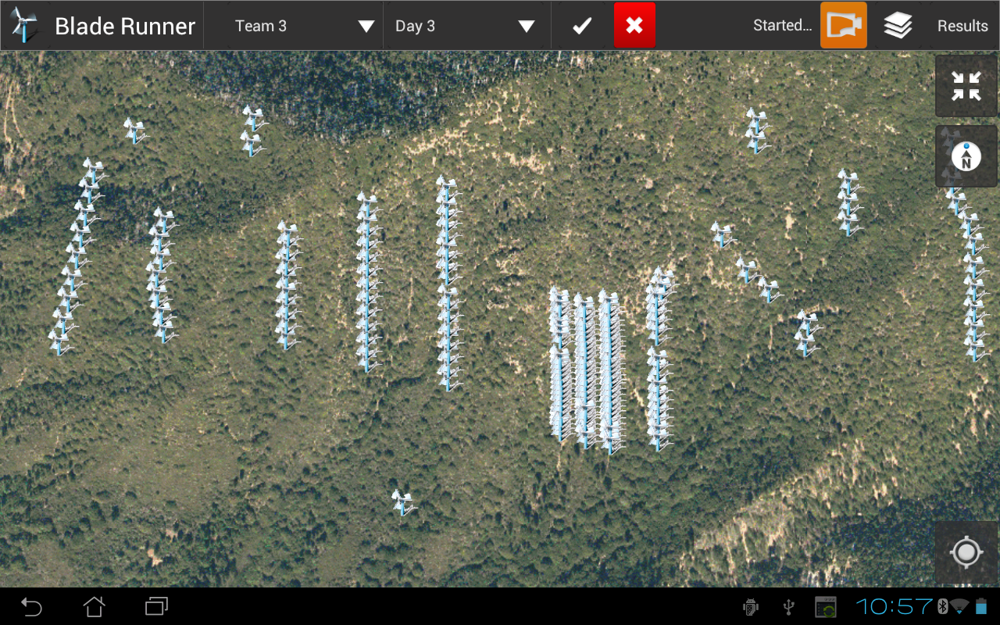
Orientation Sensor
Tap on the Orientation button 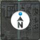 to orient the map based on user interaction.
- 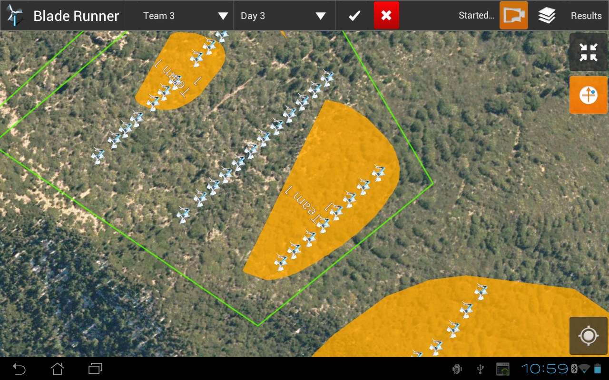